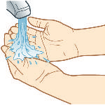
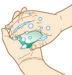
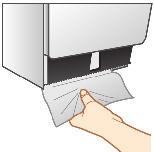
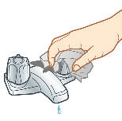

Mantesh
2182_FM_i-v.qxd 8/17/11 3:12 PM Page IFC1
EMERGENCY INFORMATION CONTACTS
American Red Cross
Food and Drug Administration
(United States)
(United States)
Phone: 800-733-2767
Phone: 888-463-6332
Website: www.redcross.org
Website: www.fda.gov
International Committee of the
Geological Survey (United States)
Red Cross
Phone: 888-275-8747
Website: www.icrc.org
Website: www.usgs.gov
Centers for Disease Control and
Humane Society of the
Prevention (United States)
United States
Phone: 800-232-4636
Phone: 202-452-1100
Website: www.cdc.gov
Website: www.hsus.org
Centers for Disease Control and
National Weather Service
Prevention (International)
(United States)
Travelers’ Health Topics (safety,
Website: www.weather.gov vaccinations, children, pets)
Poison Control Center
Phone: 800-232-4636
(United States)
Website: www.cdc.gov/travel
Phone: 800-222-1222
Department of Homeland Security
Website: www.aapcc.org
(United States)
Animal Poison Control Center
Phone: 202-282-8000
(United States)
Website: www.dhs.gov
Phone: 888-426-4435
Department of Health and Human
Website: www.aspca.org/pet-care/
Services (United States)
poison-control/
Phone: 877-696-6775
World Health Organization
Website: www.hhs.gov
(International)
Divers Alert Network
Website: www.who.int
(International)
United States Department
Phone: 800-446-2671 of Agriculture
Website: www.diversalertnetwork.org
Website: www.usda.gov
Federal Emergency Management
Agency (United States)
Phone: 800-621-3362
Website: www.fema.gov
2182_FM_i-v.qxd 8/17/11 3:12 PM Page i
Mantesh
First Aid,
Survival, and and CPR
HOME AND FIELD POCKET GUIDE
Shirley A. Jones, MS Ed, MHA, EMT-P, RN
Purchase additional copies of this book at your local bookstore or directly from F.A. Davis by shopping online at www.fadavis.com or by calling 800-323-3555 (US) or
800-665-1148 (CAN)
Associate Editor: Phillip Levy, MD, MPH
2182_FM_i-v.qxd 8/17/11 3:12 PM Page ii
Mantesh
F. A. Davis Company
1915 Arch Street
Philadelphia, PA 19103 www.fadavis.com
Copyright © 2012 by F. A. Davis Company
All rights reserved. This book is protected by copyright. No part of it may be reproduced, stored in a retrieval system, or transmitted in any form or by any means, electronic, mechanical, photocopying, recording, or otherwise, without written permission from the publisher.
Printed in China
Last digit indicates print number: 10 9 8 7 6 5 4 3 2 1
Publisher, Nursing: Robert G. Martone
Director of Content Development: Darlene D. Pedersen
Senior Project Editor: Christina C. Burns
Design and Illustration Manager: Carolyn O’Brien
Reviewers: David G. Allaben, PA, EMT-P; Jason Cunningham, EMT; Steven G. Glow, MSN,
FNP, RN, EMT-P; Lisa Harris, MD; Mike Kennamer, EdD, MPA, EMT; Ken Kustiak, MHS,
RN; Faye Melius, MS, RN; Stephen J. Nardozzi, EMT-P; Carmin J. Petrin, MS, APRN, BC;
Tony Ramsey, EMT; Corrine Sawyer, MSN, RN; Deanna K. Schnebbe, MA; Linda Van Schoder,
EdD, RRT; Laura M. Willis, MSN, RN
Consultants: Virginia E. Kelleher, MD; Emily M. King, DVM; Elizabeth U. Murphy, DVM
As new scientific information becomes available through basic and clinical research, recommended treatments and drug therapies undergo changes. The author(s) and publisher have done everything possible to make this book accurate, up to date, and in accord with accepted standards at the time of publication. The author(s), editors, and publisher are not responsible for errors or omissions or for consequences from application of the book, and make no warranty, expressed or implied, in regard to the contents of the book. Any practice described in this book should be applied by the reader in accordance with professional standards of care used in regard to the unique circumstances that may apply in each situation. The reader is advised always to check product information (package inserts) for changes and new information regarding dose and contraindications before administering any drug. Caution is especially urged when using new or infrequently ordered drugs.
Authorization to photocopy items for internal or personal use, or the internal or personal use of specific clients, is granted by F. A. Davis Company for users registered with the Copyright
Clearance Center (CCC) Transactional Reporting Service, provided that the fee of $.25 per copy is paid directly to CCC, 222 Rosewood Drive, Danvers, MA 01923. For those organizations that have been granted a photocopy license by CCC, a separate system of payment has been arranged. The fee code for users of the Transactional Reporting Service is: 8036-2182-5/12 0 +
$.25.
2182_FM_i-v.qxd 8/17/11 3:12 PM Page iii
Mantesh
Place STICKY NOTES here and use
First Aid, Survival, and CPR: Home and Field Pocket Guide as a convenient and refillable note pad!
✓ HIPAA compliant
✓ OSHA compliant
Waterproof and Reusable
Wipe-Free Pages
Write directly onto any page of First Aid, Survival, and CPR: Home and Field Pocket Guide with a ballpoint pen. Wipe old entries off with an alcohol pad and reuse.
MED-
POI-
DIS-
SUR-
SAFETY
CPR
INJURY ENVIRO
ICAL
SON
ASTER
VIVE

2182_FM_i-v.qxd 8/17/11 3:12 PM Page iv
2182_Tab01_001-015.qxd 8/18/11 11:50 AM Page 1
Mantesh
Tab 1: Basic Safety
Your First Aid, Survival, and CPR: Home and Field Pocket Guide is designed to help you respond effectively in an emergency. Keep a copy with you at all times—in your first aid, survival, or disaster kit;
in your home, school, and office; in your car, boat, recreational vehicle, hiking pack, and travel gear. Be proactive and take a first aid and cardiopulmonary resuscitation (CPR) course. Be sure to keep your training up to date.
In this tab on basic safety, you’ll learn how to recognize and act in an emergency, how to avoid disease and injury, and how to assemble first aid, survival, and disaster kits.
HOW TO RECOGNIZE EMERGENCIES
Emergencies are unexpected events that require urgent action. They can affect anyone, anywhere, at any time. Here’s how to recognize an emergency:
Unusual Personal Appearances or Behaviors
■ Sudden collapse or unconsciousness
■ Slurred speech, confusion, or drowsiness
■ Trouble breathing, wheezing, and coughing
■ Clutching the chest or throat
■ Excessive sweating or inability to sweat in a hot environment
■ Inability to move a body part
■ Uncharacteristic skin color
■ Nausea and vomiting
Noises
■ Screaming, yelling, moaning, or calling for help
■ Breaking glass, crashing metal, or screeching tires
■ Sudden loud or unidentifiable sounds
■ Sound of structural collapse or falling ladders
■ An infant or child crying for unexplained reasons
SAFETY
2182_Tab01_001-015.qxd 8/18/11 11:50 AM Page 2
SAFETY
Mantesh
Odors
■ Unusually strong odors
■ Unrecognizable odors
■ Inappropriate odors
■ The smell of smoke
Unusual Sights
■ Broken glass, fallen boxes, or overturned chair
■ Vehicle run off the road or twisted bicycle
■ Burning pot in the kitchen or smoke from the oven
■ Spilled medicine container
■ Fallen electrical lines or trees
■ Sparks, smoke, or fire
HOW TO ACT IN AN EMERGENCY
In any emergency, it’s essential to stay calm if you are to help the individuals involved. Here are the actions to take:
■ Ensure that the scene is safe. Make sure there are no immediate dangers such as fallen power lines, floodwaters, high tides, hazardous materials, or traffic.
■ Check victims for life-threatening conditions. Common ones are unconsciousness, difficulty breathing, or severe bleeding.
■ Activate the Emergency Medical Services system. Call 911 or another designated emergency phone number in your country or region and begin CPR if necessary. If you are not trained in CPR, see Tab 2: CPR, or ask for instructions from the emergency dispatcher.
■ Stop any bleeding and treat for shock (see Tab 4: Injuries and
Wounds).
■ Check for head, neck, or spinal injuries. Don’t move the person unless it’s necessary (see Tab 4: Injuries and Wounds).
■ Look for medical identification tags or prescription medications that may indicate special health problems.
2182_Tab01_001-015.qxd 8/18/11 11:50 AM Page 3
■ Don’t give fluids unless the person is conscious and alert. An unconscious person may not be able to swallow and could aspirate
(breathe in) the fluids.
■ Stay calm. Continue to aid the person until medical help arrives.
HOW TO AVOID DISEASE
Prevent Disease Transmission
■ Avoid contact with blood and other body fluids. Protect yourself with barriers such as disposable gloves. These should be carried in your first aid kit.
■ Use protective breathing barriers, such as a CPR face mask or face shield, if you need to give rescue breaths during CPR (see Tab 2: CPR).
■ If you have any cuts, sores, scrapes, or scratches, cover them with a bandage before giving first aid.
■ Use proper hand washing before and after giving first aid.
Wash Your Hands
Good hand hygiene is the single most important action you can take to prevent the spread of infection. Hand washing doesn’t take much time or effort and is a proven way to kill harmful bacteria and wash off dirt and grime. Adopting this simple habit can play a major role in protecting your health.
Effective Hand Washing With Soap and Water
1. Wet your hands with warm running water.
2. Use liquid soap or clean bar soap. Lather well.
3. Rub your hands vigorously together for at least 20 seconds. Scrub all surfaces, including the backs of your hands, your wrists, between your fingers, and under your fingernails.
4. Rinse well.
5. Dry your hands with a clean or disposable towel.
6. Use a towel to turn off the faucet. This prevents germs from getting on your clean hands.
SAFETY




2182_Tab01_001-015.qxd 8/18/11 11:50 AM Page 4
SAFETY
SAFETY TIP—To get children into the habit, teach by example.
★ Wash your hands with your children and supervise their hand washing. Tell them to wash their hands for as long as it takes them to sing their ABCs or to sing the “Happy Birthday” song twice. This works especially well with younger children, who may rush when washing their hands.
PROPER HAND WASHING TECHNIQUE
Step 1. Wet hands.
Step 2. Soap up.
Step 3. Scrub and rub for
Step 4. Rinse.
20 seconds.


2182_Tab01_001-015.qxd 8/18/11 11:50 AM Page 5
Step 5. Dry.
Step 6. Turn off water.
SAFETY TIP—Antibacterial hand gels and wipes can be effective
★ germ fighters when you don’t have access to hand washing facilities. You can keep these gels and wipes in your car, handbag, gym bag, office drawer, or first aid kit. Under normal conditions a hand sanitizer complements, but doesn’t substitute for, proper hand washing with soap and water.
HOW TO AVOID INJURY
Prevent Injuries Away From Home
■ Wear your seat belt every time you get in a car. Teach your children to do the same. Children under 13 should ride in the backseat. Use car seats for babies and small children.
■ Never drink and drive and don’t ride in a car with a drunken driver.
Don’t drive if you are tired or taking a medication that makes you drowsy.
■ Wear a helmet and other protective gear whenever you’re bicycling, motorcycling, kayaking, horseback riding, skiing, snowboarding, or rock climbing.
SAFETY
2182_Tab01_001-015.qxd 8/18/11 11:50 AM Page 6
SAFETY
■ Do not let children play near water without a responsible adult watching them.
■ Wear safety goggles whenever you use power tools or work with chemicals.
■ Be prepared by keeping a first aid, survival, and disaster supply kit in your car and workplace.
Keep a Safer Home
■ Maintain a fall-proof home. Keep stairs and walkways clear of clutter. Use bright lighting inside and outside. Make sure carpets are secured firmly to the floor; use a nonskid pad under a throw rug.
Remove snow and ice from sidewalks and porches.
■ Use a step stool to reach highly placed objects. Don’t stand on chairs or countertops. Take care when you’re high on a ladder or on the roof. Don’t take chances.
■ If you have young children or pets, plug bare electrical sockets with plastic inserts.
■ Keep electrical cords out of reach of children and pets. Replace frayed electrical cords. Don’t overload extension cords or outlets;
this may lead to fire.
■ Install smoke and carbon monoxide detectors. Check the batteries once a month and replace them once a year. Keep a working fire extinguisher in your home.
■ Have an emergency plan in case of fire. Practice the plan with your family or group. Don’t forget your pets.
■ Keep appliances away from water. Turn off or unplug appliances when you’re done with them. Read and follow the safety instructions that came with your appliances.
■ Have your heating and cooling system checked once a year. Keep fireplaces and stoves in working order.
■ Use a mask and gloves and follow the instructions on the label when you work with harsh chemicals such as pesticides, fertilizers, and strong cleaning products.
2182_Tab01_001-015.qxd 8/18/11 11:50 AM Page 7
■ Follow the manufacturer’s precautions when using flammable liquids such as gasoline or kerosene.
■ Keep toxic substances, such as medications, vitamins, food, cleaning products, and bug killer, out of reach of children and pets. Keep products in their original containers. Never store poisons in food containers. Use childproof latches on your cabinets.
■ Be prepared by keeping first aid, survival, and disaster supply kits in your home.
SAFETY TIP—Never douse an object with gasoline to start a
★ fire. Once you light the match to toss at the gasoline-soaked object—whether a pile of leaves, wood, charcoal, or a hornet’s nest—the fumes from the gasoline will burst into flames and cause life-threatening burns. Once a campfire or charcoal fire is lit, never pour gasoline on it.
The fire will travel back up to the portable container and cause a potentially fatal explosion.
SAFETY TIP—Never smoke near flammable liquids, including
★ gasoline and kerosene. The vapor from flammable liquids will burst into flames. This is a common but preventable cause of accidental burns.
HOW TO DESIGN FIRST AID, SURVIVAL,
AND DISASTER SUPPLY KITS
In an emergency, the right equipment will give you the edge you need to treat any injuries and, in some cases, to survive. When designing your kit, consider the following:
■ Environmental extremes
■ Duration of travel (or how long you’ll use the kit)
■ Distance from medical care and availability of rescue
■ Number of persons the kit will need to support—include enough items for all the members of your family and/or group
■ Weight and space limitations
SAFETY
2182_Tab01_001-015.qxd 8/18/11 11:50 AM Page 8
SAFETY
SAFETY TIP—Write in emergency phone numbers here:
★ Police:
Fire:
Hospital:
Doctor:
Dentist:
Veterinarian:
Power company:
Gas company:
Water company:
Telephone company:
Home:
Office:
School:
First Aid Kit
A first aid kit contains the items necessary to provide urgent care. A wellstocked first aid kit should be kept in your home, office, school, and vehicle or boat. It should be packed with your survival kit (pages 11–13)
when you camp, hike, or are in a remote location.
Bandages and Wound Care
Alcohol wipes
Antibacterial hand gel or wipes
Antibiotic ointment packets
Antiseptic cream or wipes
Antiseptic solution (e.g., hydrogen peroxide)
Bandages, adhesive (assorted sizes)
Bandages, triangular (36 ⫻ 36 ⫻ 51 inches [100 ⫻ 100 ⫻ 143 cm])
Cold packs (instant cold compresses)
Cotton balls
Elastic roller bandage, 3 inches (7.6 cm) wide
Elastic roller bandage, 6 inches (15.2 cm) wide
2182_Tab01_001-015.qxd 8/18/11 11:50 AM Page 9
Eye pads
Gauze roller bandage, 3 inches (7.6 cm) wide
Gauze pads, 4 ⫻ 4 inches (10 cm ⫻ 10 cm) (sterile)
Gauze pads, 5 ⫻ 9 inches (13 ⫻ 23 cm) (sterile)
Gloves (latex or nonlatex)
Iodine wipes
Insect sting relief
Moleskin: An adhesive pad used to prevent and treat blisters
SAM (structural aluminum malleable) splint (built from a thin core of aluminum alloy and sandwiched between two layers of closedcell foam and available in a roll or as a flat strip): A compact, lightweight splint designed for immobilizing bone and soft tissue injuries
Steri-Strips: Adhesive strips that keep the edges of a wound together
Sterile water to cleanse wound (unopened bottled water can substitute)
Tape (adhesive)
Vaseline petroleum jelly
Medical Equipment
CPR face mask or face shield (breathing barrier with one-way valve)
Eyewash
Knife (pocket knife)
Safety pins
Scissors
Shears (heavy-duty serrated scissors with a blunt end)
Suction bulb (used in emergency childbirth to remove secretions from the newborn’s nose and mouth)
Syringe (30 mL): To flush eye, ear, or wound with water
Thermometer (nonmercury/nonglass)
Tweezers: For taking out splinters or ticks
SAFETY
2182_Tab01_001-015.qxd 8/18/11 11:50 AM Page 10
SAFETY
Medications
Acetaminophen (Tylenol): Relieves pain and reduces fever
Antacid tablets (Rolaids, Tums): Relieve stomach indigestion
Antihistamine (diphenhydramine [Benadryl]): Relieves sneezing, itchy and watery eyes from an allergy; also relieves itchiness from insect bites and stings and from poison ivy, oak, and sumac
Antifungal cream or ointment
Aspirin: Relieves pain and reduces fever and inflammation
(redness and swelling)
Calamine lotion: Anti-itching lotion treats mild sunburn, insect bites and stings, and rashes from poison ivy, oak, and sumac
Cough suppressant
Decongestant tablets
EpiPen: Prescription medication (epinephrine) in an injectable form counteracts life-threatening allergic reactions
Hydrocortisone (1%) cream or packet: Relieves minor skin irritations, itches, and rashes
Ibuprofen (Motrin, Advil): Relieves pain and reduces fever and inflammation (redness and swelling)
Laxative: Relieves constipation
Loperamide (Imodium): Relieves diarrhea
Motion sickness tablets (dimenhydrinate [Dramamine]): Relieve nausea, vomiting, or dizziness associated with motion sickness
Nasal spray: Relieves symptoms of colds, stuffy nose, or blocked sinuses
Prescription medications: Especially for asthma, heart disease, diabetes, or high blood pressure
2182_Tab01_001-015.qxd 8/18/11 11:50 AM Page 11
Medications
Equipment
Bandages
A well-stocked first aid kit.
SAFETY TIP—First aid, survival, and disaster supply kits should
★ be checked regularly. Make sure flashlight and radio batteries work. Check expiration dates and replace any out-of-date contents.
Include a copy of First Aid, Survival, and CPR: Home and Field Pocket
Guide in every kit.
Survival Kit
A survival kit contains the items necessary to survive an unplanned night in the woods, in the desert, or at sea. If you’re trapped by a natural disaster or if your car slides off the road in a snowstorm, it may be all that keeps you alive. It won’t keep you safe, however, unless you’ve remembered to take it with you! Also, a survival kit doesn’t substitute for a first aid kit; for your safety, bring them both along.
Aluminum foil (heavy duty): A 24 ⫻ 24 inch (61 x 61 cm) piece can fold to 3 ⫻ 3 inches (7.6 ⫻ 7.6 cm) and is ideal for boiling water, cooking food, making a reflector for fire, and using as a signal mirror.
SAFETY
2182_Tab01_001-015.qxd 8/18/11 11:50 AM Page 12
SAFETY
Blanket (emergency space blanket): Strong and lightweight, about the size of your shirt pocket. It is coated on both sides with a heatreflective metallic surface and offers basic protection from wind, cold, and rain.
Bottled water: Enough to keep you hydrated during a hike or survival situation.
Butane lighter: Be sure it is filled with lighter fluid.
Compass: The arrow of the compass will always point north. It can help guide you north, south, east, and west.
Flint: A durable form of quartz. When struck against steel (the back of a locked knife blade), flint generates sparks. Use it to ignite a survival fire.
Flashlight and extra batteries.
Fire starter (magnesium): A small, flat bar made of soft magnesium with a hard flint running along the edge. It is proven effective to start a fire even in wet conditions. The magnesium is scraped off the bar with a knife onto dry kindling. A scrape on the flint side sends a shower of sparks that ignite the magnesium.
Food: Power Bar or other nonperishable energy food.
Global positioning system (GPS): An electronic mapping system that shows your exact position on the Earth no matter where you are. Make sure you have spare batteries.
Insect repellent: Protection from biting insects such as mosquitoes, ticks, and chiggers.
Knife: A survival knife (with a 3–5 inch [7.6–12.7 cm] blade) is a good cutting tool for preparing food, spearing wild game, and using with a flint to spark a flame for a fire.
Multifunction tool: This pocket-sized item contains a straight-edged knife, a serrated knife, and needle-nose pliers (good for fixing survival gear or removing a hook from a fish or your finger). Also included are screwdriver bits, a bottle opener, a scissors, a small saw, and two files. One file is for wood and softer metals; the other is diamond coated and can be used on harder metals.
2182_Tab01_001-015.qxd 8/18/11 11:50 AM Page 13
Map: Kept in a plastic bag or laminate it to protect it from water.
Matches (waterproof): Kept in a weather-tight plastic match safe.
Replace them every 6 months or so because matches have a short shelf life.
Plastic bag that seals shut (gallon or liter size): Holds water while you treat it with purification tablets.
Radio: National Oceanic and Atmospheric Administration (NOAA)
weather-band radio (United States).
Signal mirror: Highly accurate mirror that reflects sunlight to help rescuers pinpoint your position.
Sunscreen.
Tube tent: Lightweight emergency shelter that sleeps two and is small enough to roll up in your pocket.
Water purification tablets: Kills microbes to produce safe drinking water.
Whistle: Can be used to signal for help over long distances.
Disaster Supply Kit
A disaster supply kit is a collection of essential items that members of a household need in the event of a disaster. You may be cut off from basic services such as electricity, gas, water, sewage treatment, or phones for days.
Keep enough supplies in your home or workplace kit to meet your needs for at least 3 days. Your disaster supply kit should also contain items you may need in an evacuation. Store all items in sturdy containers such as waterproof backpacks, duffle bags, or plastic bins. Adjust your kit to meet your own family or group needs and check it every 6 months to update supplies. A disaster supply kit is an adjunct to, not a substitute for, your first aid and survival kits. For more on preparing for natural disasters, see Tab 7: Natural Disasters.
Three days’ supply of clean water: Each person needs 1 gallon (or
4 liters) of water per day, half to drink and half to use for cooking and sanitation. The average person needs 2 quarts (2 liters) of
SAFETY
2182_Tab01_001-015.qxd 8/18/11 11:50 AM Page 14
SAFETY
water daily, just for drinking. Reminder: 4 quarts equal 1 gallon,
1 quart equals 32 ounces, and 1 liter equals 1000 mL.
Three-day supply, per person, of food that won’t spoil.
One change of clothing and footwear per person and one blanket or sleeping bag per person.
Credit cards, cash or traveler’s checks, and extra vehicle keys.
Sanitation and hygiene items (moist towelettes and toilet paper).
Important family or group documents: Keep these in a waterproof container. Make photocopies of health insurance cards, birth certificates, wills, driver’s licenses, homeowner’s insurance policy, bank account numbers, inventory of valuable household goods, Social
Security cards, passports, immunization records, pet vaccination records, credit card information, and account numbers.
Special-needs items: Prescription medications, contact lens solutions, and hearing aid batteries.
Items for infants: Formula, diapers, bottles, and pacifiers.
HOW TO DESIGN A PET SAFETY KIT
After you’ve stocked yourself with supplies, it’s time to take care of the pets who depend on you for their daily survival. Many of the supplies in your own first aid kit (pages 8–10) can be used to treat an injured pet.
Your survival kit (pages 11–13) will also sustain your pet if you are lost or stranded at home together.
A pet safety kit includes a variety of pet-specific supplies to help keep your pet safe during an emergency. Store your pet safety kit in an easily transportable container. Supplies should include the following:
Recent pictures of your pet (in the kit, in addition to carrying copies on your person)
A spare collar, halter, and leash or lead rope
Health records, including vaccination records showing that all of your pet’s shots are current
Medications
Carrier or cage

2182_Tab01_001-015.qxd 8/18/11 11:50 AM Page 15
Water and food bowls
Three-day pet food supply
Several gallons or liters of clean drinking water per pet, depending on size
Manual can opener (not electric) to open canned pet food
Waste disposal system: Newspapers, cat litter, scooper, bleach, and plastic garbage bags
List of detailed, individualized pet care instructions
Grooming supplies and toys
Clean bedding
Styptic powder or styptic pencil (to stop minor bleeding)
Mild grease-cutting dishwashing liquid (to bathe animal after skin contamination)
Emergency phone numbers (your veterinarian, nearby veterinary emergency clinic, Animal Poison Control)
SAFETY
2182_Tab02_016-050.qxd 8/18/11 12:15 PM Page 16
CPR
Tab 2: CPR
CPR OVERVIEW
Every day around the world, CPR (also called cardiopulmonary resuscitation) is used to save lives. CPR has been used to save the lives of children who have swallowed something accidentally or gotten into a pool when they don’t know how to swim, and even the lives of adults suffering from a heart attack.
What Is CPR?
Cardiopulmonary resuscitation is a lifesaving technique that is performed when a person’s breathing or heart has stopped. The purpose of CPR is to move blood and therefore oxygen (which your body needs to survive) to the brain and heart. CPR involves three steps:
■ Compressing the person’s chest to keep the blood circulating.
■ Opening the person’s airway (the passageway between the nose/mouth and the lungs).
■ Giving rescue breaths that fill the lungs with air.
Why Perform CPR?
■ CPR is performed when a person’s heart stops beating (a condition called cardiac arrest), to prevent brain damage and death. The heart may stop because of heart disease, a motor vehicle accident, drowning, or choking.
■ Anyone who has lost consciousness may need CPR. Also, confusion, weakness, and chest pain may signal that cardiac arrest is about to occur and CPR may be needed.
■ After the heart stops, even a few minutes’ delay in starting CPR can mean the difference between life and death.
■ Performing CPR supports the heart and brain with oxygen until medical help arrives.
2182_Tab02_016-050.qxd 8/18/11 12:15 PM Page 17
How Can I Tell Whether CPR Is Needed?
If the person is conscious but cannot talk and appears to be choking,
CPR is not appropriate. Instead, follow the instructions for choking on pages 29–36.
If the person appears to have lost consciousness:
■ Ask, “Are you OK?” Call out loudly. The person may be asleep or hard of hearing.
■ If the person answers, ask how you can help.
■ If there is no answer, gently tap the person’s shoulder.
■ If there is still no response, begin the three steps of CPR. The general technique for each step is described next. See the step-by-step instructions for CPR for adults (page 21), young children (page 24), and infants (page 27).
How Do I Perform Chest Compression?
Chest compression substitutes for the lost pumping action of the heart and so keeps the blood moving through the body. The following is the general technique, which varies slightly for young children and for infants.
To compress the chest:
■ Place the heel of one hand over the center of the person’s chest between the nipples (lower half of breastbone); place the heel of your other hand over the first.
Keep your arms straight and locked at the elbows.
■ Firmly compress the person’s chest.
■ Push hard and fast, at a rate of at least
100 compressions/minute.
CPR
2182_Tab02_016-050.qxd 8/18/11 12:15 PM Page 18
CPR
How Do I Open the Person’s Airway?
Ensure an open airway. This does not require looking in the mouth, but straightening the angle of the head and neck so that the path of air flow is unobstructed (e.g., by the person’s tongue).
To open the airway:
■ Place the person face up on a hard, flat surface.
■ Lift the person’s chin with one hand while pushing down on the forehead with the other hand. This aligns the airway structures.
How Do I Perform Rescue Breathing?
Rescue breathing delivers oxygen to the victim’s lungs. The most common technique is mouth-to-mouth breathing. You probably won’t catch a disease using this method, but you may want to buy a face mask or face shield at your local drug store and keep it in your first aid kit. See three following examples:
2182_Tab02_016-050.qxd 8/18/11 12:15 PM Page 19
THREE RESCUE BREATHING METHODS
Method 1, Mouth-to-mouth:
■ Open the person’s airway by tilting the head and lifting the chin as shown.
■ Pinch the person’s nose shut with your fingers.
■ Inhale normally and cover the person’s mouth with your mouth to create an airtight seal.
■ Exhale.
■ Watch for the person’s chest to rise as you give each breath.
Method 2, CPR face mask:
■ Put the mask over the person’s nose and mouth as shown.
■ Make sure the airway is open and press the mask against the person’s face to create an airtight seal.
■ Give rescue breaths through the one-way valve.
Continued
CPR
2182_Tab02_016-050.qxd 8/18/11 12:15 PM Page 20
CPR
THREE RESCUE BREATHING METHODS—cont’d
Method 3, CPR face shield:
■ Place the shield over the person’s mouth with the airway tube between the person’s lips.
■ Hold the airway open and pinch the person’s nose shut with your fingers.
■ Give rescue breaths through the breathing tube.
Do I Need an Automated External Defibrillator?
An automated external defibrillator (AED) can be used to “kick-start”
a heart that has stopped beating. If CPR does not revive the person and an AED is available, you should use it. We explain how to use an AED at the end of this tab.
2182_Tab02_016-050.qxd 8/18/11 12:15 PM Page 21
HOW TO PERFORM CPR: UNCONSCIOUS ADULT (8 YEARS OLD OR OLDER)
EMERGENCY ACTIONS
Step 1. First, check to make sure the scene is safe.
Step 2. Check the person for alertness. Gently tap the person’s shoulder. Ask, “Are you OK?” See if the person moves or makes a noise.
BASIC
SAFETY
Step 3. Check for breathing (no more than 10 seconds). If the person is not breathing or only gasping for breath go immediately to step 4.
Step 4. If there is no reaction and others are present, tell someone to phone 911 and get an AED, if available. If you are alone and have a cell phone, dial 911, put your cell phone on speaker, and begin CPR. If you are alone and do not have a cell phone, begin CPR immediately.
Step 5. Place the person face up on a hard, flat surface. Kneel on the floor at the person’s side.
Continued
CPR
2182_Tab02_016-050.qxd 8/18/11 12:15 PM Page 22
CPR
EMERGENCY ACTIONS—cont’d
Step 6. Begin chest compressions.
■ Place the heel of one hand over the center of the person’s chest between the nipples
(lower half of breastbone);
place the heel of your other hand over the first. Keep your arms straight and locked at the
BASIC
elbows.
SAFETY
■ Firmly compress the person’s chest at least 2.0 inches (5 cm).
■ Give 30 compressions at a rate of at least 100/min.
■ Push hard and fast.
■ Allow complete recoil after each compression.
■ Count 1, 2, 3, 4... up to 30.
Step 7. After 30 chest compressions open the airway by lifting the person’s chin with one hand while pushing down on the forehead with the other hand.
2182_Tab02_016-050.qxd 8/18/11 12:15 PM Page 23
Step 8. If the person is not breathing, begin rescue breaths.
■ Pinch the person’s nose shut with your fingers.
■ Give two breaths (1 sec each)
strong enough to make the person’s chest rise.
Step 9. Continue to give 2 breaths followed by 30 compressions for
2 min. Stop and look for signs of breathing, coughing, or movement. IF these signs are not present, continue CPR until help arrives. IF a second rescuer arrives to help with adult CPR, continue the same ratio of
2 breaths followed by 30 compressions.
WHAT TO DO NEXT
■ If breathing begins, monitor the person until help arrives.
■ If the person moves but is still not breathing, continue rescue breathing at 10–12 breaths/min until help arrives.
■ If neither movement nor breathing occurs, continue CPR until help arrives. If an AED is available, set up and use it. See instructions on pages 36–39.
CPR
2182_Tab02_016-050.qxd 8/18/11 12:15 PM Page 24
CPR
HOW TO PERFORM CPR: UNCONSCIOUS CHILD (1 TO 8 YEARS OLD)
EMERGENCY ACTIONS
Step 1. First, check to make sure the scene is safe.
Step 2. Check for alertness.
Gently tap the child’s shoulder.
Ask, “Are you OK?” See whether the child moves or makes a noise.
Step 3. Check for breathing (no more than 10 seconds). If the child is not breathing or only gasping for breath go immediately to step 4.
Step 4. If there is no reaction and others are present, tell someone to phone 911 and get an AED, if available. If you are alone and have a cell phone, dial 911, put your cell phone on speaker, and begin CPR. If you are alone and do not have a cell phone, begin CPR immediately.
Step 5. Place the child face up on a hard, flat surface. Kneel on the floor at the child’s side.
2182_Tab02_016-050.qxd 8/18/11 12:15 PM Page 25
Step 6. Begin chest compressions.
■ Place the heel of one or both hands over the center of the child’s chest between the nipples (lower half of breastbone). Keep your arm(s)
straight and locked at the elbows.
■ Firmly compress the child’s chest at least one third the depth of the chest, about
2 inches (5 cm).
■ Give 30 compressions at a rate of at least 100/min.
■ Push hard and fast.
■ Allow complete recoil after each compression.
■ Count 1, 2, 3, 4... up to 30
Step 7. Open the airway by lifting the child’s chin with one hand while pushing down on the forehead with the other hand.
Continued
CPR
2182_Tab02_016-050.qxd 8/18/11 12:15 PM Page 26
CPR
EMERGENCY ACTIONS—cont’d
Step 8. If the child is not breathing, begin rescue breaths.
■ Pinch the child’s nose shut with your fingers.
■ Give two breaths (1 sec each)
strong enough to make the child’s chest rise.
Step 9. Continue to give 2 breaths followed by 30 compressions for
2 min. Stop and look for signs of breathing, coughing, or movement.
IF these signs are not present, continue CPR until help arrives. IF a second rescuer arrives to help with child CPR, change the ratio to
2 breaths followed by 15 compressions.
WHAT TO DO NEXT
■ If breathing begins, monitor the child until help arrives.
■ If the child moves but is still not breathing, continue rescue breathing at 12–20 breaths/min until help arrives.
■ If neither movement nor breathing occurs, continue CPR until help arrives. If an AED is available, set up and use it. See instructions on pages 36–39.
2182_Tab02_016-050.qxd 8/18/11 12:15 PM Page 27
HOW TO PERFORM CPR: UNCONSCIOUS INFANT (YOUNGER THAN 1 YEAR)
EMERGENCY ACTIONS
Step 1. First, check to make sure the scene is safe.
Step 2. Check for alertness.
■ Gently rub the infant’s back or tap the feet.
■ Never shake an infant.
■ See whether the infant moves or makes a noise.
Step 3. Check for breathing (no more than 10 seconds). If the infant is not breathing or only gasping for breath go immediately to step 4.
Step 4. If there is no reaction and others are present, tell someone to phone 911 and get an AED, if available. If you are alone and have a cell phone, dial 911, put your cell phone on speaker, and begin CPR. If you are alone and do not have a cell phone, begin CPR immediately.
Step 5. Place the infant face up on a hard, flat surface, against your thigh or on the floor.
Continued
CPR
2182_Tab02_016-050.qxd 8/18/11 12:15 PM Page 28
CPR
EMERGENCY ACTIONS—cont’d
Step 6. Begin chest compressions.
■ Place two fingers just below the infant’s nipple line on the breastbone (center of the chest).
■ Firmly compress the infant’s chest at least one third the depth of the chest, about
11/2 inches (4 cm).
■ Give 30 compressions at a rate of at least 100/min.
■ Push hard and fast.
■ Count 1, 2, 3, 4... up to 30.
Step 7. Open the airway by lifting the infant’s chin with one hand while pushing down on the forehead with the other hand.
■ The infant’s head should not be tilted as far back as an adult’s.
■ If the infant’s head is tilted too far back, it may close off the airway.
2182_Tab02_016-050.qxd 8/18/11 12:15 PM Page 29
Step 8. If the infant is not breathing, begin rescue breaths.
■ Cover the infant’s nose and mouth with your mouth.
■ Give two breaths (1 sec each).
■ Use small puffs of air so you don’t over inflate the lungs.
Step 9. Continue to give 2 breaths followed by 30 compressions for
2 min. Stop and look for signs of breathing, coughing, or movement.
IF these signs are not present, continue CPR until help arrives. IF a second rescuer arrives to help with infant CPR, change the ratio to
2 breaths followed by 15 compressions.
WHAT TO DO NEXT
■ If breathing begins, monitor the infant until help arrives.
■ If the infant moves but is still not breathing, continue rescue breathing at 12–20 breaths/min.
■ If neither movement nor breathing occurs and you are still alone, shout for help. Continue CPR until help arrives. If an AED is available, set up and use it. See instructions on pages 36–39.
CHOKING: ALERT ADULT OR CHILD
(1 YEAR OLD OR OLDER)
What Signs Indicate Choking?
■ Grabbing at the throat with one or both hands
■ Noisy breathing, gagging, coughing
■ Inability to talk or make a sound
CPR
2182_Tab02_016-050.qxd 8/18/11 12:15 PM Page 30
CPR
EMERGENCY ACTIONS
Step 1. Determine whether the airway is blocked. Ask, “Are you choking? Can you speak? Can I help you?”
Step 2. If you determine the airway is blocked:
■ Stand behind the person and wrap your arms around the person’s waist.
Locate the navel (bellybutton).
■ If the person is obese or pregnant, wrap your arms around the chest.
Step 3. Make a fist.
■ Place thumb side just above the person’s navel.
■ Locate the middle of the person’s chest if the person is obese or pregnant.
2182_Tab02_016-050.qxd 8/18/11 12:15 PM Page 31
Step 4. Grasp your fist with your other hand.
■ Press your fist abruptly into the person’s abdomen and use an upward, inward thrust.
■ Use a straight thrust back if the person is obese or pregnant.
■ Your action will push air from the lungs like a cough. This can help dislodge an object.
WHAT TO DO NEXT
■ Continue thrusts until the object is coughed out and the person can breathe or talk.
■ If the object cannot be removed, the person will pass out.
■ If the person passes out, follow the steps for Adult or Child Who
Becomes Unconscious From Choking (page 31).
ADULT OR CHILD WHO BECOMES UNCONSCIOUS
FROM CHOKING
What Signs to Look For?
■ No movement
■ No breathing
■ Bluish lips or skin (from lack of oxygen)
■ Inability to move air into the lungs with rescue breaths
CPR
2182_Tab02_016-050.qxd 8/18/11 12:15 PM Page 32
CPR
EMERGENCY ACTIONS
Step 1. Check for alertness. Gently tap the person’s shoulder. Ask,
“Are you OK?” See whether the person moves or makes a noise.
Step 2. If others are present, tell someone to phone 911. If you are alone and have a cell phone, dial 911, put your cell phone on speaker, and begin adult or child CPR (pages 21–26). If you are alone and do not have a cell phone, begin CPR immediately.
Step 3. Each time you open the person’s mouth to give rescue breaths:
■ Look in the person’s mouth for an object such as a piece of food that may have become stuck in the throat.
■ If seen, do not push the object further into the throat. Instead, use your finger to sweep the object out.
■ If not seen, never perform a blind finger sweep.
■ Chest compressions from CPR can help force air from the lungs to dislodge the object.
Step 4. Continue to give 2 breaths followed by 30 compressions for
2 min. Stop and look for signs of breathing, coughing, or movement.
If these signs are not present, continue CPR until help arrives. IF a second rescuer arrives to help with adult CPR, continue the ratio of
2 breaths to 30 compressions. IF a second rescuer arrives to help with child CPR, change the ratio to 2 breaths followed by
15 compressions.
2182_Tab02_016-050.qxd 8/18/11 12:15 PM Page 33
WHAT TO DO NEXT
■ If the person moves but is still not breathing, continue rescue breathing at 10–12 breaths/min for an adult and 12–20 breaths/min for a child.
■ If breathing begins, monitor the person until help arrives.
CHOKING: ALERT INFANT
(YOUNGER THAN 1 YEAR OLD)
What Signs Indicate an Infant Is Choking?
■ Noisy breathing
■ High-pitched crowing sounds
■ Inability to breathe or cry
EMERGENCY ACTIONS
Step 1. Determine whether the airway is blocked. Listen for noisy or high-pitched breathing.
Step 2. If you determine the airway is blocked, support the infant’s head and neck and lay the infant face down on your forearm. Using your leg or lap for support, keep the infant’s head lower than the body.
Continued
CPR
2182_Tab02_016-050.qxd 8/18/11 12:15 PM Page 34
CPR
EMERGENCY ACTIONS—cont’d
Step 3. Give back slaps: With the heel of your free hand, strike five quick, forceful slaps between the infant’s shoulder blades.
Step 4. Turn the infant face up on your other arm. Using your leg or lap for support, keep the infant’s head lower than the body.
Step 5. Give chest thrusts:
■ Place two fingers on the breastbone just below nipple line.
■ Give five quick thrusts downward, depressing the chest by 1/3 to 1/2 its depth each time.
2182_Tab02_016-050.qxd 8/18/11 12:15 PM Page 35
WHAT TO DO NEXT
■ Continue five back slaps and five chest thrusts until the object is coughed out or the infant cries.
■ If the object cannot be removed, the infant will pass out.
■ If the infant passes out, follow the steps for choking infant who becomes unconscious (page 35).
INFANT WHO BECOMES UNCONSCIOUS FROM
CHOKING
What Signs to Look For?
■ No movement
■ No breathing
■ Bluish lips or skin (from lack of oxygen)
■ Inability to move air into the lungs with rescue breaths
EMERGENCY ACTIONS
Step 1. Check for alertness. Gently rub the infant’s back or tap the feet.
Never shake an infant. See whether the infant moves or makes a noise.
Step 2. If others are present, tell someone to phone 911. If you are alone and have a cell phone, dial 911, put your cell phone on speaker, and begin infant CPR (page 27). If you are alone and do not have a cell phone, begin CPR immediately.
Continued
CPR
2182_Tab02_016-050.qxd 8/18/11 12:15 PM Page 36
CPR
EMERGENCY ACTIONS—cont’d
Step 3. Each time you open the infant’s mouth to give rescue breaths:
■ Look in the infant’s mouth for an object such as a piece of food or toy that may have become stuck in the throat.
■ If seen, do not push the object further into the throat. Instead, use your finger to sweep the object out.
■ If not seen, never perform a blind finger sweep.
■ Chest compressions from CPR can help force air from the lungs to dislodge the object.
Step 4. Continue to give 2 breaths followed by 30 compressions for
2 min. Stop and look for signs of breathing, coughing, or movement. If these signs are not present, continue CPR until help arrives. IF a second rescuer arrives to help with infant CPR, change the ratio to 2 breaths followed by 15 compressions.
WHAT TO DO NEXT
■ If the infant moves but is still not breathing, continue rescue breathing at 12–20 breaths/min.
■ If breathing begins, monitor the infant until help arrives.
AED
An automated external defibrillator (AED) is a small, lightweight, portable device used to give an electric shock to restore a stopped heartbeat. An electric shock is the most important factor in kick-starting the heart.
2182_Tab02_016-050.qxd 8/18/11 12:15 PM Page 37
How Does an AED Work?
■ After you turn it on, an AED uses voice and visual prompts to tell you what to do.
■ Pads are applied to the person’s chest.
■ An electric cord attaches the pads to the AED.
■ The AED determines that a shock is needed.
■ The AED delivers an electric shock.
Where Can You Find an AED?
■ Schools, airports, office buildings, and sometimes a person’s home
■ Your local pharmacy
What Do I Need to Know About AEDs?
■ Never use a child pad on an adult. The energy is too low.
■ You can use adult pads on a child, but the pads must not touch each other.
What Signs Indicate the Need for AED?
■ No response to voice or touch
■ No breathing
■ No movement
EMERGENCY ACTIONS
Step 1. Perform CPR until an AED arrives and is set up.
Step 2. Turn on the AED. Follow the voice prompts and visual messages.
AED
Continued
CPR
2182_Tab02_016-050.qxd 8/18/11 12:15 PM Page 38
CPR
EMERGENCY ACTIONS—cont’d
Step 3. Open the package of chest pads.
■ Bare the chest.
■ Check for medication patches on chest (use gloves).
■ Shave chest (with included razor in AED pack) if person has chest hair where pads are placed.
■ Do not place pads over an implanted pacemaker or defibrillator.
■ Dry chest if moist or wet so electricity will not arc when shock is given.
Step 4. Attach the sticky side of the pads directly to the person’s bare chest:
■ Place one pad to the upper right side of the chest.
■ Place the second pad under the left breast.
■ The pads will have pictures on them that show where to put them.
2182_Tab02_016-050.qxd 8/18/11 12:15 PM Page 39
Step 5. Clear the area around the person.
Step 6. Wait until the AED tells you what to do.
Step 7. If a shock is indicated and other people are present, warn them to keep clear. Also make sure your body is not touching the person.
■ Say, “I’m going to shock on
AED three. One, I’m clear. Two, you’re clear. Three, everybody’s clear.”
■ Check to make sure no one is touching the person or the AED.
Step 8. Press the “Shock” button.
AED
WHAT TO DO NEXT
■ Once the shock is given, follow the voice prompts from the AED.
■ If CPR is advised, continue CPR, beginning with chest compression.
■ After 2 min of CPR, the AED will prompt you with further verbal and visual cues.
CPR
2182_Tab02_016-050.qxd 8/18/11 12:15 PM Page 40
CPR
HOW TO PERFORM CPR ON A DOG OR CAT
If your pet collapses, there are steps you can take to save the animal’s life.
Performing CPR on a dog or cat is similar to the technique used on people.
EMERGENCY ACTIONS
Step 1. Check for alertness.
■ Gently pat the animal on its back and call its name.
■ See whether the animal moves or makes a noise.
■ Take care not to be bitten if the animal is sleeping heavily and is startled awake.
Step 2. If the animal does not respond, lay the animal down, on either side, on a hard, flat surface.
Kneel on the floor at the animal’s head.
2182_Tab02_016-050.qxd 8/18/11 12:15 PM Page 41
Step 3. Open the airway.
■ Straighten the animals’ neck with the head in a natural, neutral position.
■ Pull the animals’ tongue forward between the front teeth, or to the side of the mouth. The tongue may be blocking the airway.
■ Continue to Step 4 to check for breathing.
Step 4. Look, listen, and feel for breathing (no more than 10 sec).
■ Look for the animals’ chest to rise and fall.
■ Listen for air.
■ Feel for the animals’ breath on your cheek or back of your hand.
Continued
CPR
2182_Tab02_016-050.qxd 8/18/11 12:15 PM Page 42
CPR
EMERGENCY ACTIONS—cont’d
Step 5. If the animal is not breathing, begin rescue breaths.
remember to keep the airway open by straightening the neck with the head in a natural, neutral position.
For medium-sized and large dogs, place your mouth completely over the animal’s nose to create an airtight seal.
■ Grasp the animal’s muzzle and Mouth over the animal’s nose.
hold the mouth closed with both hands.
■ Make sure your hands tightly cover the corners of the animal’s mouth so air does not leak out when you give a breath.
For puppies/kittens and small dogs or cats, your mouth will seal over both the nose and mouth.
For any size animal, give
2 breaths (1 sec each) strong enough to make the animal’s chest rise. Larger animals need more air to fill their lungs; small animals need less.
Mouth seals the animal’s nose/mouth.
2182_Tab02_016-050.qxd 8/18/11 12:15 PM Page 43
Step 6. After giving two breaths, locate the landmark for chest compressions.
■ Take the animal’s front leg and bend it at the elbow, flexing at the shoulder.
■ The point where the elbow of the animal touches the body is where you place your hands for compressions.
■ This should be the widest part of the chest.
Step 7. Begin chest compressions.
Puppies or kittens:
■ Place your thumb on one side of the animal’s chest and the rest of your fingers on the other side.
■ Firmly compress the chest, with your thumb, 1/3–1/2 its depth.
Chest compression: puppies
■ Give 15 compressions at a rate or kittens.
of at least 100–150 times/min.
■ Push hard and fast.
■ Count 1, 2, 3, 4... up to 15.
Continued
CPR
2182_Tab02_016-050.qxd 8/18/11 12:15 PM Page 44
CPR
EMERGENCY ACTIONS—cont’d
Small dogs and cats (less than 30 lb [13.6 kg]):
■ Place the heel of one hand on the side of the animal’s chest at its widest point
(where the elbow is when the shoulder is bent). Keep your arm straight and locked at your elbow.
■ Firmly compress the animal’s chest to 1/3–1/2 its depth.
■ Give 15 compressions at a rate of at least 100–150 times/min.
■ Push hard and fast.
■ Count 1, 2, 3, 4... up to 15.
Chest compression: small dogs and cats.
Medium-sized and large dogs
(30 lb [13.6 kg] or more):
■ Place the heel of one or both hands on the side of the animal’s chest at its widest point
(where the elbow is when the shoulder is bent). Keep your arms straight and locked at your elbows.
■ Firmly compress the animal’s chest to 1/3–1/2 its depth.
■ Give 15 compressions at a rate
Chest compression:
of 80–100 times/min.
medium-sized and large dogs.
■ Push hard and fast.
■ Count 1, 2, 3, 4... up to 15.
2182_Tab02_016-050.qxd 8/18/11 12:15 PM Page 45
Step 8. Give 2 breaths followed by 15 compressions for 2 min. Stop and look for signs of breathing, coughing, or movement. If these signs are not present, continue CPR until help arrives.
WHAT TO DO NEXT
■ If breathing begins, monitor the animal until help arrives.
■ If the animal moves but is still not breathing, continue rescue breathing at 12–20 breaths/min for puppies/kittens and small dogs/cats or
10–12 breaths/min for medium-sized or large dogs until help arrives.
■ If neither movement nor breathing occurs, continue CPR until help arrives.
CHOKING: ALERT DOG OR CAT
What Signs Indicate a Dog or Cat Is Choking?
■ Pawing at the mouth
■ Change in sound of vocalizations/barking/meowing
■ Change in breathing pattern
■ Noisy breathing
■ Gagging or coughing
EMERGENCY ACTIONS
Step 1. Determine whether the airway is blocked. Listen for noisy or high-pitched breathing.
Continued
CPR
2182_Tab02_016-050.qxd 8/18/11 12:15 PM Page 46
CPR
EMERGENCY ACTIONS—cont’d
Step 2. Place the animal on a hard, flat surface with all four feet on the ground.
■ Puppies/kittens and cats/small dogs (less than 30 lb [13.6 kg]):
Kneel on the floor behind the animal. Place two knuckles
(for puppies/kittens) or a fist of one hand in the center of the animal’s abdomen just below the ribs and the other hand on the back for support.
Abdominal thrust: puppies/
■ Press your knuckles or fist kittens and cats/small dogs.
abruptly into the animal’s abdomen and use an upward, inward thrust. If nothing comes out, do it again. You must apply just enough force to move the animal’s body. Do this three to four times, and check each time to see whether the foreign object has been expelled.
2182_Tab02_016-050.qxd 8/18/11 12:15 PM Page 47
For a larger dog (more than 30 lb [13.6 kg]):
■ Bend at the waist behind the animal and wrap your arms tightly around the center of the animal’s abdomen just under the rib cage. Feel for the animal’s ribs and make a fist with one hand just below the ribs.
■ Place your other hand over your fist.
■ Press your fist abruptly into the
Abdominal thrust: larger dog.
animal’s abdomen and use an upward, inward thrust. Give one quick push upward. If nothing comes out, do it again. You must apply just enough force to move the animal’s body. Do this three to four times, and check each time to see whether the foreign object has been expelled.
WHAT TO DO NEXT
■ Continue thrusts until the object is coughed out and the animal can breathe.
■ If the object cannot be removed, the animal will pass out.
■ If the animal passes out, follow the steps for Dog or Cat That Becomes
Unconscious From Choking (page 48).
CPR
2182_Tab02_016-050.qxd 8/18/11 12:15 PM Page 48
CPR
DOG OR CAT THAT BECOMES UNCONSCIOUS FROM
CHOKING
What Signs to Look For?
■ No movement
■ No breathing
■ Inability to move air into lungs with rescue breaths
EMERGENCY ACTIONS
Step 1. Check for alertness.
■ Gently pat the animal on its back and call its name.
■ See whether the animal moves or makes a noise.
■ Take care not to be bitten if the animal is sleeping heavily and is startled awake.
Step 2. If the animal does not respond, immediately begin the steps for CPR (see page 40).
2182_Tab02_016-050.qxd 8/18/11 12:15 PM Page 49
Step 3. Each time you open the animal’s mouth to give rescue breaths:
■ Look in the mouth for an object such as a piece of food, stick, or toy that may have become stuck in the throat.
■ If seen, do not push the object further into the throat. Instead, use your finger to sweep the object out.
■ If not seen, never perform a blind finger sweep.
■ Do not place your fingers in the mouth of an alert animal, or you may get bitten.
■ Chest compressions from CPR can help force air from the lungs to dislodge the object.
Caution: Do not attempt to remove the hard, bone-like structure deep in the throat at the base of the tongue called the hyoid apparatus
(Adam’s apple).
Step 4. Continue to give 2 breaths followed by 15 compressions for
2 min. Stop and look for signs of breathing, coughing, or movement. If these signs are not present, continue CPR until help arrives.
Continued
CPR
2182_Tab02_016-050.qxd 8/18/11 12:15 PM Page 50
CPR
EMERGENCY ACTIONS—cont’d
WHAT TO DO NEXT
■ If breathing begins, monitor the animal until help arrives.
■ If the animal moves but is still not breathing, continue rescue breathing at 12–20 breaths/min for puppies/kittens and small dogs/cats or
8–10 breaths/min for medium-sized or large dogs until help arrives.
■ If neither movement nor breathing occurs, continue CPR until help arrives.
2182_Tab03_051-074.qxd 8/18/11 12:16 PM Page 51
Tab 3: Medical Emergencies
Medical emergencies are characterized by the sudden appearance of a serious—sometimes life-threatening—problem such as an allergic reaction, a heart attack, or a seizure. Medical emergencies related to injuries, environmental factors, and poisoning are covered in later tabs. Here, we focus on emergencies resulting from underlying medical conditions such as heart disease or diabetes. We also discuss acute medical conditions such as vomiting and dehydration that can develop suddenly in a previously healthy person.
Other medical problems include:
■ Appendicitis
■ Allergies
■ Emergency childbirth
■ Dehydration
■ Ear problems
■ Fever
■ Respiratory conditions
■ Seizures
■ Stroke
The information in this tab should help you to
■ Recognize that an emergency exists.
■ Look for the cause of the illness.
■ Treat the problem immediately to the extent possible.
PERFORM AN INITIAL ASSESSMENT
An initial assessment is a quick check for life-threatening problems in the body’s respiratory, circulatory, and nervous systems. Follow the
Personal Safety—Disease Transmission guidelines on page 3 to maintain proper safety precautions. To remember the steps, think ABCDE:
MED–
ICAL
2182_Tab03_051-074.qxd 8/18/11 12:16 PM Page 52
MED–
ICAL
A: Airway Management
■ A blocked airway can lead quickly to respiratory arrest and death.
■ Check for responsiveness. If the person is agitated, confused, lethargic, or unconscious, the airway could be blocked.
■ If necessary, open the airway. Follow guidelines for cardiopulmonary resuscitation (CPR) and Choking in Tab 2: CPR.
B: Breathing
■ Respiratory arrest can quickly lead to cardiac arrest.
■ Look, listen, and feel for air moving in and out of the person’s chest.
If the person is not breathing, follow the guidelines for CPR in
Tab 2: CPR.
C: Circulation
■ Check for signs of circulation (coughing, movement, normal breathing).
If there are none, follow the guidelines for CPR in Tab 2: CPR.
■ Assess for bleeding: If present, is it well controlled? If not, control the bleeding (page 80) and treat for shock (page 96).
D: Disability
■ Determine whether the person is conscious or unconscious.
■ Assess the level of consciousness. Is the person awake, verbal, reactive to pain?
■ Check whether the person can move his or her arms and legs.
■ Check for head, neck, or back injuries. If you suspect any, make sure the person is not moved. Once emergency personnel arrive on the scene, they should properly immobilize the person with a cervical collar and backboard.
E: Environment and Exposure
■ Protect the person from the elements (heat, cold, rain).
■ Keep the person warm and dry.
WHAT TO DO NEXT
Once you’ve identified and treated any life-threatening problems, you can perform a brief secondary assessment to help you determine
2182_Tab03_051-074.qxd 8/18/11 12:16 PM Page 53 what’s wrong and whether or not immediate medical attention is needed.
■ Reassess the level of consciousness.
■ Examine the person from head to toe to identify any medical issues such as a headache; itchy, watery eyes; runny, stuffy, or itchy nose;
difficulty with speech or vision; skin rash; chest pain; abdominal pain; or back pain.
■ Ask whether the person is allergic to certain foods (i.e., peanuts, seafood), medications (i.e., penicillin), or insect stings.
■ Ask what events led up to the current problem. Was the onset sudden, or did it occur over several hours or days?
If the person is experiencing pain, ask the following questions:
■ When did it begin?
■ What brought it on?
■ What does it feel like?
■ Where is it located?
■ Does it go anywhere (e.g., into the jaw or shoulder)?
■ Has this happened before?
■ Does anything make it feel better?
■ How bad is it on a scale of 0 (no pain) to 10 (pain as bad as it can be)?
A report of chest pain or pain extending into the jaw or shoulder suggests that the person may be experiencing a heart attack and needs immediate medical attention. Also, any report of severe pain warrants immediate medical attention.
The rest of this tab provides information on initial care for specific medical conditions and emergencies.
ABDOMINAL CONDITIONS
The location of abdominal pain, or bellyache, is useful in narrowing down the underlying cause. Pain in just one part of the abdomen may
MED–
ICAL
2182_Tab03_051-074.qxd 8/18/11 12:16 PM Page 54
MED–
ICAL
point to a specific condition, such as appendicitis or gallstones. This interpretation is especially likely if the pain is bad, starts suddenly and doesn’t go away, or gets worse when the person moves or coughs.
Conditions such as diarrhea, dysentery, and vomiting may cause more generalized abdominal pain.
Appendicitis
The appendix is a small sac attached to the large intestine. If the appendix is blocked, it can swell and become infected. This infection is called appendicitis.
■ Signs and symptoms: Pain in the right lower abdomen; nausea, vomiting, low fever, and constipation.
■ Treatment: Don’t give anything to eat or drink. Don’t use laxatives or pain medication. Seek immediate medical care. The appendix may need to be surgically removed; if not, it could burst and spread infection throughout the abdomen.
Diarrhea
Diarrhea can be caused by a simple stomach flu virus, consumption of unusual kinds or amounts of food, or more serious intestinal problems such as bacterial or parasitic infection (from consumption of contaminated food or water), irritable bowel syndrome, celiac disease, inflammatory bowel disease (Crohn’s disease or ulcerative colitis), or ischemic colitis.
■ Signs and symptoms: Mild: Loose, runny stool. Serious: Loose, runny stool, signs of dehydration (see page 62), stomach or belly pain, and fever. Stool that is bloody, dark red, or black is a sign of internal bleeding.
■ Treatment: Mild: Don’t give any food for several hours until the person feels better. Have the person take small sips of water or a rehydration drink or sports drink. Try to match fluid intake to estimated fluid loss. Serious: Seek immediate medical care. For either mild or serious diarrhea, consider antidiarrheal agents such as Imodium
2182_Tab03_051-074.qxd 8/18/11 12:16 PM Page 55
(loperamide). If the diarrhea persists more than 72 hours, the person may need antibiotics.
SAFETY TIP—Rehydration drinks (Pedialyte, Rehydrate) and
★ sports drinks (Gatorade, Powerade) replace fluids and electrolytes in amounts your body can use. Rehydration drinks are preferred for infants and young children.
Dysentery
Dysentery is a painful infection of the digestive system that results in severe diarrhea containing mucus and blood. The typical cause is consumption of unsanitary water or food containing microorganisms that damage the intestinal lining. There are two major types of dysentery: amebic and bacillary. Amebic dysentery is caused by a singlecelled, microscopic parasite living in the large intestine. Bacillary dysentery is caused by a variety of bacteria, including Salmonella, Shigella, and Escherichia coli (E. coli). Poor hygiene and sanitation increase the risk of dysentery by allowing these organisms access to food or water via contaminated feces.